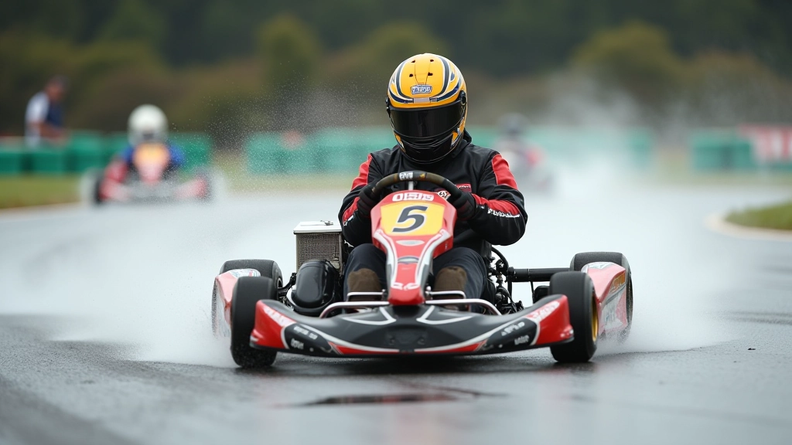
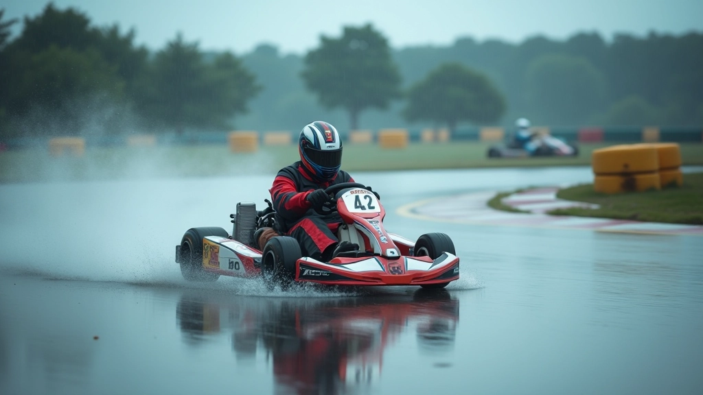

اختيار وصيانة إطارات الكارت للظروف المبللة
فهم الفرق بين إطارات الطقس الجاف والمبلل، واختيار الإطارات المناسبة لظروفك.
تعلم المبادئ الأساسية لضبط المقود والتعامل مع فقدان الجر، مع التركيز على تقنيات الدخول والخروج من المنعطفات بأمان.


عندما يكون المسار مبللًا، كل شيء يتغير. الإطارات تفقد الجر، والكارت يصبح أقل استجابة للتوجيه. لكن هذا لا يعني أن عليك أن تتوقف عن القيادة. الحقيقة أن هناك تقنيات محددة تساعدك على البقاء تحت السيطرة حتى في أسوأ الظروف.
الفرق بين السائق الجيد والسائق المتوسط على المسارات المبللة يكمن في الحسم والثقة. تحتاج إلى فهم كيفية يتحرك الكارت عندما يكون المسار زلقًا، ثم التكيف معه. هذا الدليل يركز على الأساسيات — الحركات الصحيحة، الضغط على المقود، والتنفس الصحيح.
الجزء الأهم؟ الحفاظ على الهدوء. القيادة على الأسفلت المبلل ليست عن السرعة الكاملة — بل عن الاستقرار والتحكم.
أول شيء تحتاج إلى فهمه هو أن ضبط المقود يختلف تماماً عندما يكون المسار مبللاً. الحركات السريعة والحادة لا تعمل هنا. عليك أن تكون أكثر سلاسة وحذراً.
ابدأ بتقليل سرعة دوران المقود بنسبة 15-20% عما تفعله عادة. هذا يعني أن دخولك للمنعطف سيكون أبطأ قليلاً، لكنك ستحافظ على الاتصال بالطريق. الكارت سيشعر بأنه أكثر ثباتاً، والإطارات ستحتفظ بقبضتها على الأسفلت المبلل.
ركز على الاستقرار أولاً. السرعة ستأتي لاحقاً، عندما تشعر بثقة أكبر. معظم السائقين الجدد يرتكبون خطأ محاولة الذهاب بنفس السرعة كما في الأيام الجافة — وهذا يؤدي إلى الانزلاق.

دخول المنعطف على أسفلت مبلل يتطلب نهجاً مختلفاً تماماً. لا تستطيع الاعتماد على الإطارات لتمسك بك كما تفعل عادة. بدلاً من ذلك، تحتاج إلى الدخول بزاوية أقل حدة وسرعة أقل.
الخطوة الأولى: اقترب من المنعطف ببطء أكثر مما تعتقد أنك تحتاج. ثم، ابدأ بتحرير المقود تدريجياً بينما تزيد الضغط على دواسة الغاز. هذا يعطي الكارت وقتاً للاستجابة، والإطارات وقتاً للبحث عن الجر.
المفتاح هنا هو عدم الاستعجال. تقبل أن الوقت الذي ستستغرقه للمنعطف أطول قليلاً، وأن هذا أمر طبيعي تماماً.
ابدأ بالكبح قبل المنعطف بمسافة كافية
أدخل المنعطف بسرعة أقل من المعتاد
حرر المقود بسلاسة بينما تضغط الغاز


هذا هو الجزء الذي يرعب معظم السائقين الجدد. ما الذي تفعله عندما تشعر بأن الكارت ينزلق؟ الإجابة بسيطة: لا تفعل شيئاً مفاجئاً.
عندما يبدأ الكارت بالانزلاق، يحاول الكثيرون تصحيح الوضع بحركة مقود سريعة. هذا يجعل الأمور أسوأ. بدلاً من ذلك، حافظ على ضغطك على دواسة الغاز كما هو، واترك الكارت يعود بنفسه. الإطارات ستجد الجر مرة أخرى في غضون ثانية أو ثانيتين.
التدريب على هذا يتطلب وقتاً. لكن مع الممارسة، ستشعر بالثقة عند التعامل مع المنعطفات الزلقة. أنت لا تحتاج إلى أن تكون خارقاً — عليك فقط أن تبقى هادئاً.

هذا الدليل مقدم لأغراض تعليمية وإعلامية فقط. القيادة على المسارات المبللة تحمل مخاطر متزايدة، وعليك دائماً الالتزام بتعليمات مدربك والقوانين المحلية. إذا كنت مبتدئاً، ننصح بشدة بأخذ دروس مع مدرب معتمد قبل محاولة القيادة على مسارات مبللة. السلامة دائماً تأتي أولاً.
القيادة على الأسفلت المبلل ليست مستحيلة — هي ببساطة تتطلب نهجاً مختلفاً. ركز على السلاسة، والصبر، والثقة. ابدأ ببطء، تعلم كيف يتحرك كارتك، ثم زد تدريجياً من سرعتك.
الأساسيات التي تعلمتها هنا — ضبط المقود السلس، دخول المنعطفات بحذر، والبقاء هادئاً عند فقدان الجر — ستبقيك آمناً وتساعدك على التحسن. مع الممارسة، ستشعر بأنك تتحكم حتى في أسوأ الظروف.
هل تريد تعمق أكثر في تقنيات القيادة المتقدمة؟
اقرأ الدليل المتقدم